Keep a little
of every place.
A collection of original passport stamps for the countries and cities that make a journey yours.
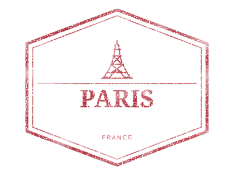
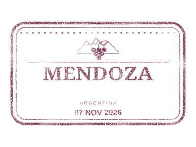

Your destination.
Your date. Your stamp.
Use a single component in Angular or React. The country and city choose the artwork; an optional date is printed inside.
No manual image mapping.
No folder of assets to configure.
import { PassportStampComponent } from
'@lucianopignotti/passport-stamps/angular';
// Add PassportStampComponent to imports.
<passport-stamp
country="AR"
city="Mendoza"
date="2026-11-07"
[size]="280"
/>Find your next stamp
Browse countries and cities, download an SVG, or copy the artwork into your project.
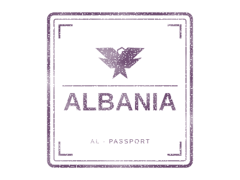

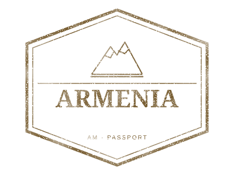

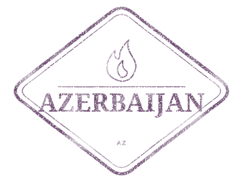

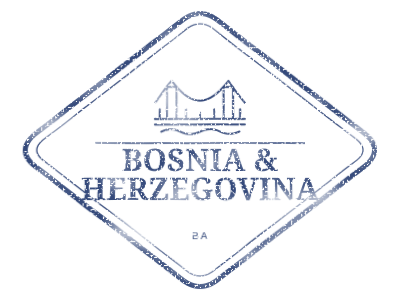

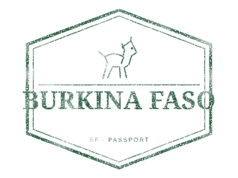
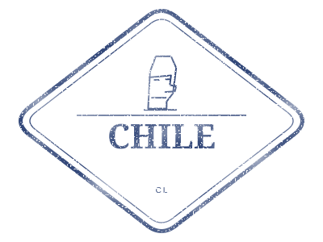
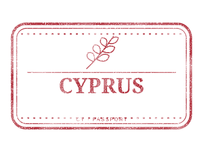
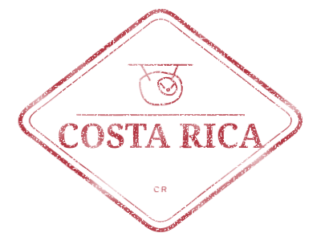
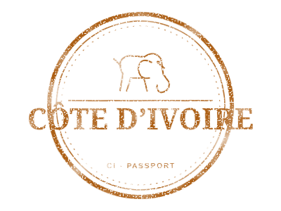
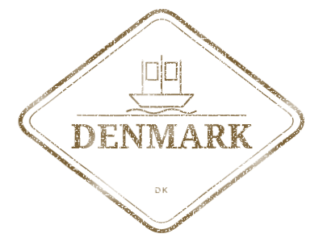
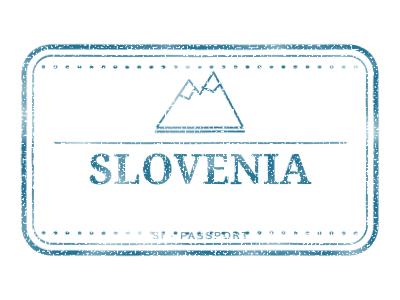


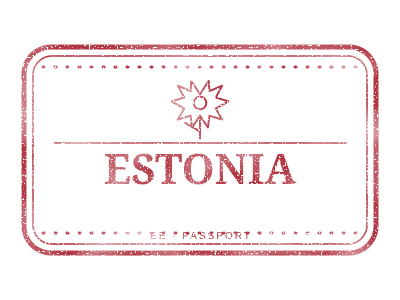
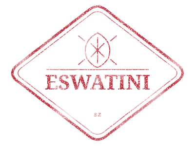
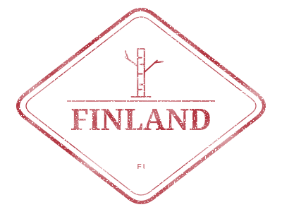


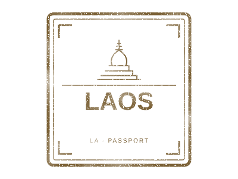
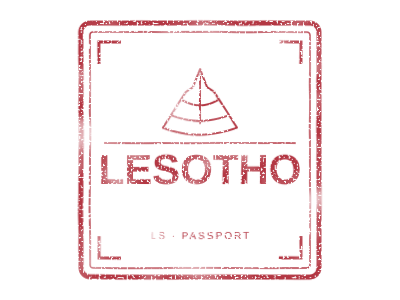
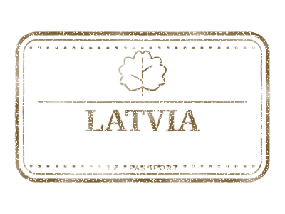
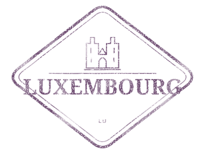
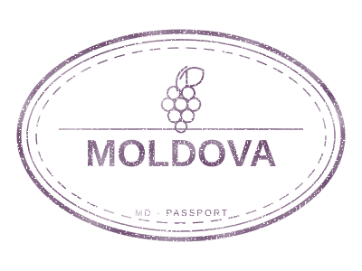
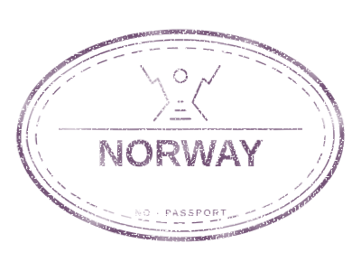
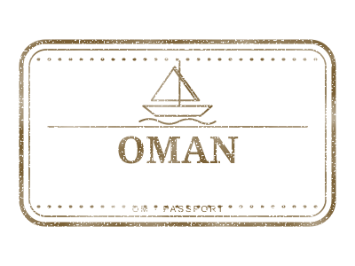
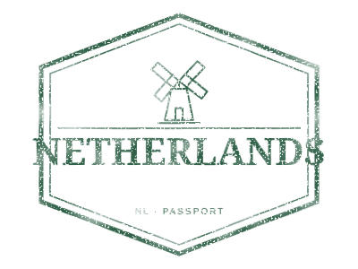
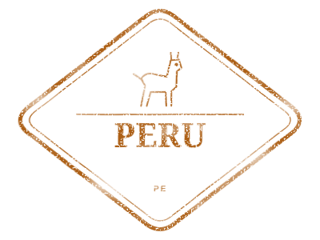
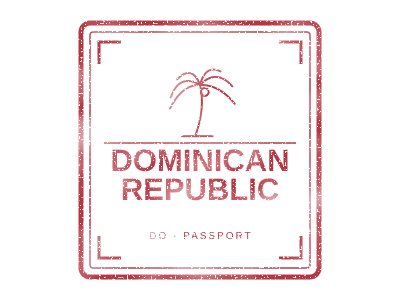
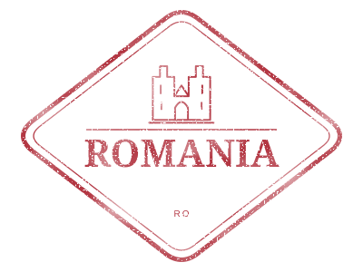
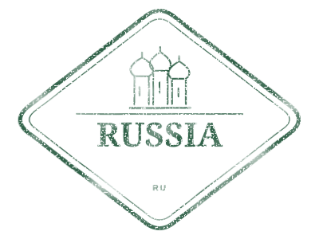
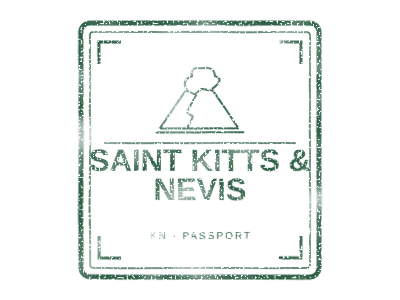
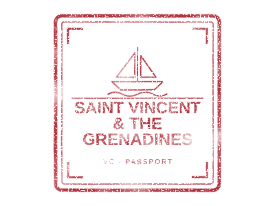
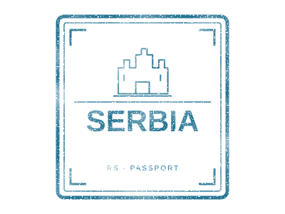
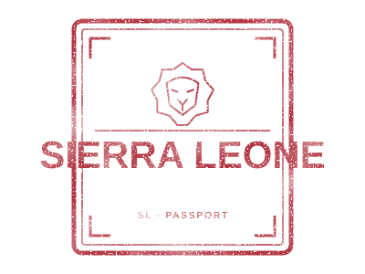
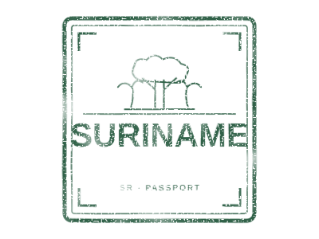
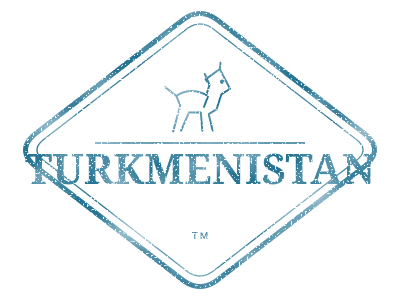
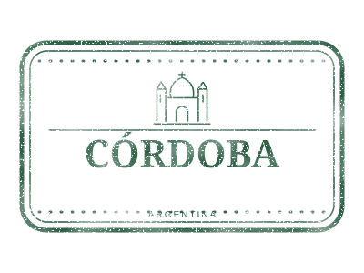

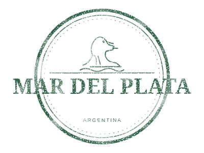
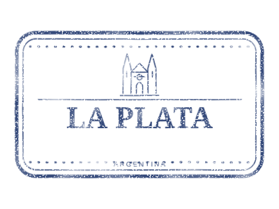
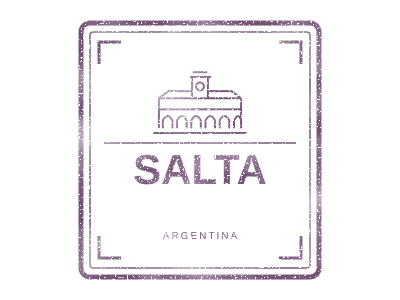
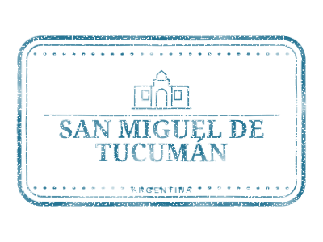
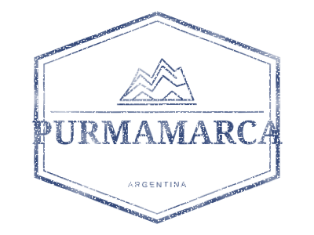
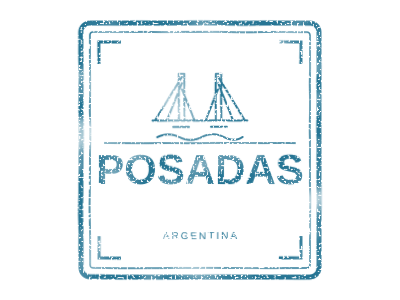
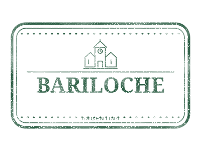
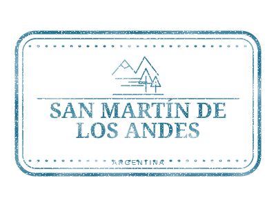
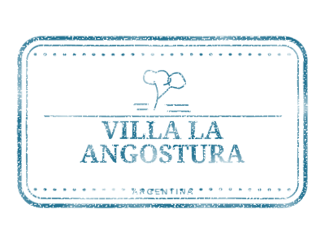
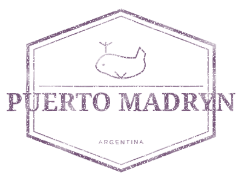
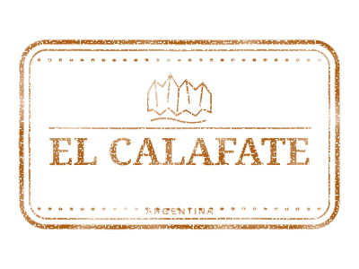
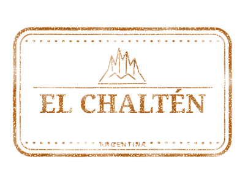
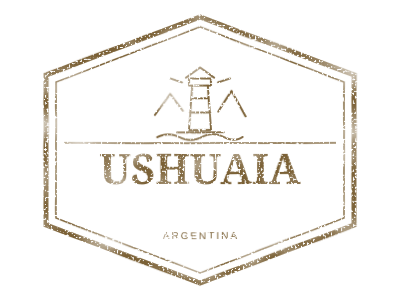


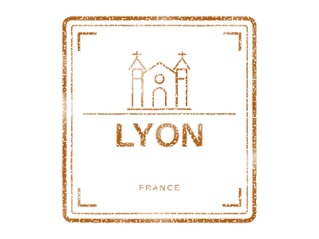
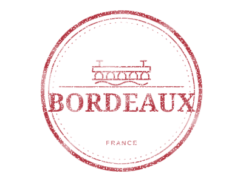


No stamps match your search.
Use it in your project
Install once, choose your framework, and pass the properties. Explore the examples or try the live preview below.
One component. Country, city, and an optional date — all through properties.
The examples below use the 0.2.0 API. Check npm for published versions.
Angular 20+ · <passport-stamp>
Import the standalone component. No NgModule, image copying, or assets configuration is needed.
import { Component } from '@angular/core';
import { PassportStampComponent } from '@lucianopignotti/passport-stamps/angular';
@Component({
selector: 'app-example',
imports: [PassportStampComponent],
template: `
<passport-stamp country="AR" />
<passport-stamp country="AR" city="Mendoza" date="2026-11-07" />
<passport-stamp
[country]="selectedCountry"
[city]="selectedCity"
[date]="visitDate"
variant="clean"
[size]="280"
/>
`
})
export class ExampleComponent {
selectedCountry = 'AR';
selectedCity = 'Mendoza';
visitDate = '2026-11-07';
}Use property bindings such as [country] and [date] for changing values. size is a number in pixels: use [size]="280".
React 18+ · <PassportStamp />
Import the component and pass props. It works with standard React tooling; you do not need an SVG loader or a public assets folder.
import { PassportStamp } from '@lucianopignotti/passport-stamps/react';
export function Example() {
const selectedCountry = 'AR';
const selectedCity = 'Mendoza';
const visitDate = '2026-11-07';
return (
<>
<PassportStamp country="AR" />
<PassportStamp country="AR" city="Mendoza" date="2026-11-07" />
<PassportStamp
country={selectedCountry}
city={selectedCity}
date={visitDate}
variant="clean"
size={280}
/>
</>
);
}The component is a client entry point and loads artwork asynchronously. On server-rendered pages, the image appears after the client loads it.
Properties and selection rules
| Property | Example | Behavior |
|---|---|---|
| country | "AR" | Required. ISO alpha-2 code recommended. Country names and known aliases also work. |
| city | "Mendoza" | Optional. Name, slug, alias, or destination ID. Without it, show the country stamp. |
| strictCity | true | Optional. Report an error when the selected country does not have the requested city. Defaults to false. |
| date | "2026-11-07" | Optional calendar date in YYYY-MM-DD format. Printed inside the stamp as 07 NOV 2026. |
| dateFormat | "numeric" | Print 07/11/2026. The default, text, prints 07 NOV 2026. |
| variant | "worn" | Worn by default. Set to "clean" to remove ink effects. |
| assetBaseUrl | "/travel/assets/stamps" | Optional directory containing svg/ for undated stamps. Copy the package SVGs there first. |
| size | 280 | Width in pixels, default 240. Height follows the 4:3 artwork ratio. |
| alt | "My visit to Mendoza" | Optional image description. Otherwise generated from the selected stamp and date. |
If a city is not in the selected country's catalog, the component uses the country stamp. Unknown countries and invalid dates show an explicit error. Dates do not undergo timezone conversion. A dated layout reserves a dedicated row inside the frame so the date does not cover existing lettering.
Artwork loads on demand from the package, without a CDN. Components use isolated SVG data URLs, so repeated stamps do not share filter IDs. If your site sets a Content Security Policy, allow data: images or use assetBaseUrl for undated stamps.
Plain HTML and direct SVG files
Download a file from the gallery, or copy it from the npm package into your public/stamps folder.
<img src="/stamps/ar-mendoza.svg" alt="Mendoza — grapes and Andes Mountains" width="400" height="300">Static SVG files remain available at the same paths. Dynamic dates are provided by the components and core renderer.
Try the properties · live preview
This preview uses the same renderer as the Angular and React components.
Open this preview to load a stamp.